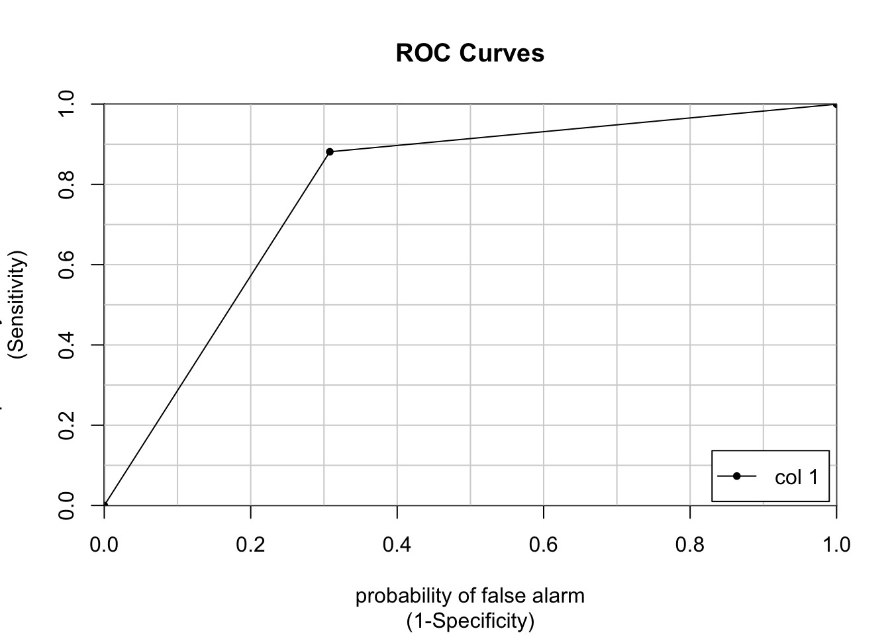
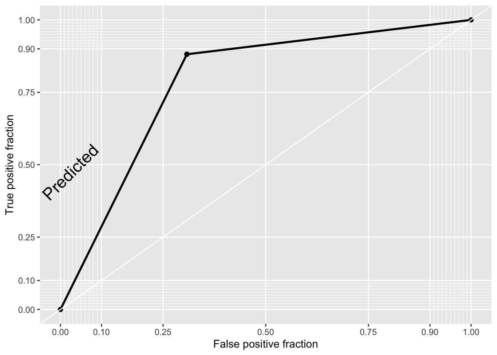
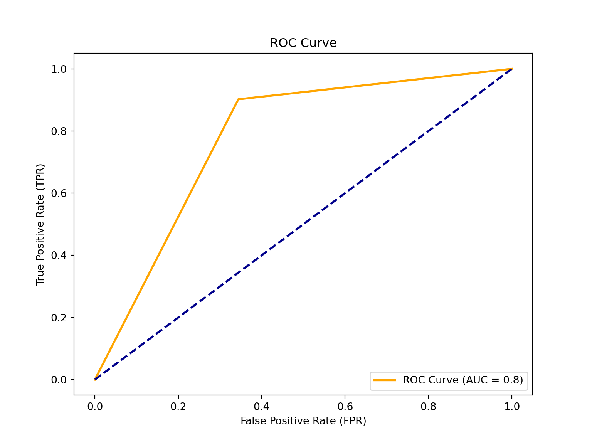

Have you heard the English proverb, “Birds of a feather flock together”? It references and old saying that indicates that people with similar characteristics tend to group and stay together. In Machine Learning, Classification problems deal with the evaluation of models of categorical response, such as:
Predictive classification: E.g. is this spam or not? Predictive classification concerns itself with unlabeled data, and groups them by the proportion of characteristics they commonly share. After which, it classifies them into some predetermined category. A common, ‘lazy’ method is kNearest Neighbors.
Binary classification: You may already be familiar with probit or logistic regression models. You obtain two types of predictions from such models: proportions, and the generation of a predicted discrete choice. For Policy purposes, we are interested in the discrete choice. E.g. filtering low-income individuals to select those who will receive social assistance and those who will not, based on some income/expenditure threshold. But, we still need the probability estimates of each of the two categories. They are relevant when working out the model’s confidence about the predicted discrete choice.
Multi-label classification: Not unlike binary classification, it is a labeled data model that relies on techniques such as multinomial logistic regression. It deals with data with more than two categories, and generates discrete choices, which policymakers then rely on to make decisions.
In the video-lecture below you’ll get an intuitive explanation of what a logistic regression model is, and how we can use it in the context of a prediction policy framework.
After watching the video, below you’ll find a continuation of our previous exercise. Previously, we were working on predicting per capita monthly expenditures of a sample of individuals from Malawi. Our assumption is that by predicting how much a person spends per month, we can infer whether they are in poverty (or not) by contrasting that value to other relevant information, such as the cost of food and rent in the country. Another way to go about this is to use the estimated poverty line, and generate a variable that takes on the value \(1\) if the person’s expenditure is below the poverty line (they are poor) and \(0\) otherwise (not poor). Thus, our policy problem becomes one of classification.
We will continue to work with the Malawi dataset, which can be downloaded in the (Prediction Policy Problems)[https://www.ml4publicpolicy.com/predictionpolicy.html] tab of this website.
rm(list = ls()) # this line cleans your Global Environment.
setwd("/Users/michellegonzalez/Documents/GitHub/Machine-Learning-for-Public-Policy") # set your working directory
# Do not forget to install a package with the install.packages() function if it's the first time you use it!
# install.packages(caTools, plotROC) # these guys are new for us
library(dplyr) # core package for dataframe manipulation. Usually installed and loaded with the tidyverse, but sometimes needs to be loaded in conjunction to avoid warnings.
library(tidyverse) # a large collection of packages for data manipulation and visualisation.
library(caret) # a library with key functions that streamline the process for predictive modelling
library(skimr) # a package with a set of functions to describe dataframes and more
library(plyr) # a package for data wrangling
library(caTools) # a library with several basic utility functions (e.g. ROC curves, LogitBoos classifier, etc.)
library(plotROC) # a companion to ggplot2 (loaded with the tidyverse) for plotting ROC curves
data_malawi <- read_csv("malawi.csv") # the file is directly read from the working directory/folder previously setThis section will not be a thorough step-by-step of the pre-processing and visualisation of our data because we have already done that. However, we have to do something very important: recover a static variable from the original dataset that contains a single number: the poverty line in Malawi.
Feature selection: subsetting the dataset
The variable that we’re interested in recovering is lnzline. The code below reproduces the dataframe subsetting from our previous exercise. Except, this time we will NOT delete de static vector lnzline.
# object:vector that contains the names of the variables that we want to get rid of (notice this time lnzline is still there)
cols <- c("ea", "EA", "psu","hhwght", "strataid", "case_id","eatype")
# subset of the data_malawi object:datframe
data_malawi <- data_malawi[,-which(colnames(data_malawi) %in% cols)] # the minus sign indicates deletion of cols
colnames(data_malawi) # print the names of the remaining vectors in our dataframe## [1] "lnexp_pc_month" "hhsize" "hhsize2" "agehead"
## [5] "agehead2" "north" "central" "rural"
## [9] "nevermarried" "sharenoedu" "shareread" "nrooms"
## [13] "floor_cement" "electricity" "flushtoilet" "soap"
## [17] "bed" "bike" "musicplayer" "coffeetable"
## [21] "iron" "dimbagarden" "goats" "dependratio"
## [25] "hfem" "grassroof" "mortarpestle" "table"
## [29] "clock" "region" "lnzline"At this point, we still need to do two more pre-processing steps: correctly define the vector/variable class in the dataframe, and create the binary outcome/target variable. We will repeat the class-transformation code chunk below so that you have all that is needed in one section. However, we won’t spend time explaining it in detail as that was done in the previous session.
# transform all binary/categorical data into factor class
min_count <- 3 # vector: 3 categories is our max number of categories found
# store boolean (true/false) if the number of unique values is lower or equal to the min_count vector
n_distinct2 <- apply(data_malawi, 2, function(x) length(unique(x))) <= min_count
# select the identified categorical variables and transform them into factors
data_malawi[n_distinct2] <- lapply(data_malawi[n_distinct2], factor)
# recall poverty line contains 1 unique value (it is static), let's transform the variable into numeric again
data_malawi$lnzline <- as.numeric(as.character(data_malawi$lnzline))
# you can use ``skim(data_malawi)'' to check that the dataframe is in working orderFeature creation: create a binary variable
# print summary statistics of target variable
summary(data_malawi$lnexp_pc_month)## Min. 1st Qu. Median Mean 3rd Qu. Max.
## 4.777 6.893 7.305 7.359 7.758 11.064# if the log of per capita expenditure is below the estimated poverty line, classify individual as poor, else classify individual as not poor. Store as factor (default with text is class character)
data_malawi$poor <- as.factor(ifelse(data_malawi$lnexp_pc_month<= data_malawi$lnzline,"Y","N")) # Y(es) N(o)
# make sure that the factor target variable has poor = Y as reference category (this step is important when running the logistic regression)
data_malawi$poor <- relevel(data_malawi$poor, ref="Y") # make Y reference category
# print a proportions table to get a first impression of the state of poverty in Malawi
prop.table(table(data_malawi$poor))##
## Y N
## 0.65 0.35According to our sample, about 65% of Malawians are considered poor. This number is not unreasonable. According to The World Bank’s Country Report for Malawi, ca. \(70\%\) of the population lives with under \(\$2.15\) a day, and the poverty rate is estimated to be at \(50\%\). About half of their population is labelled as poor. These estimates were done with \(2019\) data (so, a bit more recent than our sample).
# Final data pre-processing: delete static variable (poverty line)
# and along with it: remove the continuous target (as it perfectly predicts the binary target)
which(colnames(data_malawi)=="lnzline") # returns column number 31## [1] 31which(colnames(data_malawi)=="lnexp_pc_month") # returns column number 1## [1] 1data_malawi <- data_malawi[,-c(1,31)] # delete columns no. 1 and 31 from the datasetLet’s use a simple 80:20 split of our data. We will use the caret package again.
set.seed(1234) # ensures reproducibility of our data split
# data partitioning: train and test datasets
train_idx <- createDataPartition(data_malawi$poor, p = .8, list = FALSE, times = 1)
Train_df <- data_malawi[ train_idx,]
Test_df <- data_malawi[-train_idx,]
Now, let’s fit a logistic model:
# Step 1: create trainControl object
TrControl <- trainControl(
method = "cv",
number = 5,
summaryFunction = twoClassSummary,
classProbs = TRUE, # IMPORTANT!
verboseIter = FALSE
)We’re going to pass the TrControl object onto the caret model estimation to ask for the following: - cross-validate with 5 folds - show model summary: performance metrics for when we have two distinct classes (binary outcome), including the area under the ROC curve, the sensitivity and specificity. - the ROC curve is based on the predicted class probabilities, so the classProbs = TRUE parameter must accompany a twoClassSummary setup. - veboseIter = TRUE shows you the output for each iteration (but we don’t want to display all the details atm).
# Step 2: train the model.
set.seed(12345)
m <- train(
poor ~ .,
Train_df,
method = "glm",
family="binomial",
trControl = TrControl,
preProcess=c("center", "scale")
)## Warning in train.default(x, y, weights = w, ...): The metric "Accuracy" was not
## in the result set. ROC will be used instead.
Notice the warning. If we want to report the “Accuracy” metric,
we should remove the twoClassSummary parameter specification in the
TrControl object.
# print the model's performance metrics
print(m) ## Generalized Linear Model
##
## 9025 samples
## 29 predictor
## 2 classes: 'Y', 'N'
##
## Pre-processing: centered (30), scaled (30)
## Resampling: Cross-Validated (5 fold)
## Summary of sample sizes: 7219, 7220, 7220, 7221, 7220
## Resampling results:
##
## ROC Sens Spec
## 0.8825702 0.8943044 0.6774223Performance metrics (on the train set!)
ROC: it is a probability curve plotted with the True Positive Rate (y-axis) against the False Positive Rate (x-axis); you can think of it as plotting the tradeoff between maximising the true positive rate and minimising the false positive rate. The preferred area under the curve is \(1\). Our estimated \(0.88\) score indicates that a logistic classification is a good fit for our data (close to \(1\)).
Sensitivity: it is a measure of the proportion of the positive (\(1\) = poor) values that are correctly identified. Therefore, we have correctly identified \(89\%\) of the actual positives. The formula is: \(\frac{tp}{tp + fn}\); where tp = true positive and fn = false negative. In the video-lecture, Stephan used the term Recall, where we now use sensitivity. This means that our model does pretty well at predicting/identifying people living below the poverty line in Malawi!
Specificity: measures the proportion of actual negatives that are correctly identified by the model; i.e. the ability of our model to predict if an observation doesn’t belong to a certain category. The formula is: \(\frac{tn}{tn + fp}\); where tn = true negative and fp = false positive. At \(67\%\), we can trust a predicted negative (\(0\)) value to be real more than half the time. Our model is not as good at predicting who doesn’t live below the poverty line in Malawi.
The performance metrics we have interpreted above are based on
the training dataset only. We are interested in our model’s ability to
make out-of-sample predictions. Therefore, we will use the definitions
above, but to take the scores on the test-dataset predictions to make
our final evaluation.
Out-of-sample performance
Notice that we have used cross-validation in our training dataset. In theory, our performance metrics have been validated in 5 different folds. To a certain extent, that means that our performance metrics above did reflect the model’s ability to extrapolate. Nevertheless, we will still see how our trained model performs in our test dataset. You can think of this step as predicting on a sixth fold. We know that the performance of a logistic classification model on the train set is relatively good, is it the same for the test dataset?
# First, use the logistic classification model (trained on the Train_df) to make predictions on the test dataset:
set.seed(12345)
pr1 <- predict(m, Test_df, type = "raw")
head(pr1) # Yes and No output## [1] N Y Y Y Y Y
## Levels: Y NWe have specified the type of prediction we want: raw. This will return the predicted classification (\(0\) or \(1\)) as opposed to the individual’s probability of falling into the selected category \(1\) (or the estimated probability of being poor). There is a rule of thumb that says you will be categorised as poor (or any chosen category) if your estimated probability is >= to \(0.5\). With this information, we can create a Confusion Matrix which will be accompanied by performance metrics.
# Next, we call the caret package's confusionMatrix function, and select the two elements to be contrasted:
# the predicted classification vector, and the actual observed vector from the test dataframe.
confusionMatrix(pr1, Test_df[["poor"]], positive = "Y") # positive = "Y" indicates that our category of interest is Y (1)## Confusion Matrix and Statistics
##
## Reference
## Prediction Y N
## Y 1294 270
## N 172 519
##
## Accuracy : 0.804
## 95% CI : (0.787, 0.8202)
## No Information Rate : 0.6501
## P-Value [Acc > NIR] : < 2.2e-16
##
## Kappa : 0.5564
##
## Mcnemar's Test P-Value : 3.953e-06
##
## Sensitivity : 0.8827
## Specificity : 0.6578
## Pos Pred Value : 0.8274
## Neg Pred Value : 0.7511
## Prevalence : 0.6501
## Detection Rate : 0.5738
## Detection Prevalence : 0.6936
## Balanced Accuracy : 0.7702
##
## 'Positive' Class : Y
## The first element from the above function returns the confusion
matrix, a 2×2 table that shows the predicted values from the model
vs. the actual values from the test dataset. You may be acquainted with
this sort of table, but know it as a cross-tabulation. From the
confusion matrix, we obtain the information that we need to estimate
some performance metrics. If you need a reminder of what each cell in
the 2x2 matrix represents, recall that the structure of our target
variable is [\(Y(1),N(0)\)]. Therefore,
the first cell would be the intersection of Predicted \(Y\) vs Observed \(Y\) (or True Positive) = \(1294\), the fourth cell would be the
intersection of Predicted \(N\) vs
Observed \(N\) (or True Negative) =
\(519\). These guys are the predictions
that have hit the mark! On the other hand, the second cell would be the
intersection of Predicted \(Y\) vs
Observed \(N\) (or False Positive) =
\(270\), and the third cell Predicted
\(N\) vs Observed \(Y\) (or False Negative) = \(172\). These were incorrect predictions. We
use these counts (true positives, true negatives, false positives, false
negatives) to estimate performance metrics
Besides the performance metrics discussed previously, this function also shows the Accuracy of our model (or \(1\) - the error rate) which, at \(0.8\), indicates that our classification algorithm is highly accurate.
**Imbalanced data**
When you have a large number of zeros (or No, in this case), the Accuracy metric may not be the most reliable one. If we look at the formula: number of correct predictions / total number of predictions, we see why this might be an issue. It is a lot easier to correctly predict that of which there is plenty of (Yes), than the category for which we have less instances. Imbalance is not a problem for our target variable, as we have roughly as many zeros as ones. In fact, we have more Yes (1) responses. Nonetheless, this sets the stage for us to introduce the Kappa statistic (\(0.55\)), which is a measure of model accuracy that is adjusted by accounting for the possibility of a correct prediction by chance alone. It ranges from 0 to 1, and can be interpreted using the following thresholds:
Poor = Less than 0.20
Fair = 0.20 to 0.40
Moderate = 0.40 to 0.60
Good = 0.60 to 0.80
Very good = 0.80 to 1.00
At \(0.55\), our classification
model performs moderately well. Finally, Sensitivity and Specificity
scores on the test dataset are very close to the ones obtained from the
train dataset. This is a good sign for the out-of-sample stability of
our model.
Model Visualisation
We can visualise the performance of our classification model in various ways. For now, we’ll focus on a simple ROC AUC.
# ROC AUC: Area Under the Curve
# colAUC function from the caTools library
# transform predicted values and observed values into class numeric (needed for the colAUC function)
pr_numeric <- as.numeric(as.factor(pr1))
# sanity check:
head(cbind(pr_numeric, pr1)) # the numeric values of both vectors seem to be the same. ## pr_numeric pr1
## [1,] 2 2
## [2,] 1 1
## [3,] 1 1
## [4,] 1 1
## [5,] 1 1
## [6,] 1 1poor_numeric <- as.numeric(as.factor(Test_df$poor))
# sanity check
head(cbind(poor_numeric,Test_df$poor)) # all good ## poor_numeric
## [1,] 1 1
## [2,] 1 1
## [3,] 1 1
## [4,] 1 1
## [5,] 1 1
## [6,] 1 1# plot the ROC area under the curve
colAUC(pr_numeric, poor_numeric, plotROC = TRUE)
## [,1]
## 1 vs. 2 0.7702343# We can also plot the ROC AUC with ggplot
# First, we create a dataframe containing the observed and the predicted values (in numeric form)
roc_df <- data.frame(Observed = poor_numeric, Predicted = pr_numeric)
# Second, we add the geom_roc() layer to a ggplot object
roc_gg <- ggplot(roc_df, aes (d = Observed, m = Predicted)) +
geom_roc(labels = FALSE, color='orange') +
style_roc(theme = theme_bw, guide = TRUE) # guide=TRUE adds a diagonal guideline, style_roc() adds minor grid lines, and optionally direct labels to ggplot objects containing a geom_roc layer
direct_label(roc_gg, nudge_y = 0.2) # direct_label tells you what the plotted line represents, nudge_y option places the label (you can play around with that number to see where different values place the label)## Warning in verify_d(data$d): D not labeled 0/1, assuming 1 = 0 and 2 = 1!
## Warning in verify_d(data$d): D not labeled 0/1, assuming 1 = 0 and 2 = 1!
Notice the warning on the ggplot2 ROC AUC plot. The assumption that they are making is correct, so we do not need to do anything else at this moment. You can check this by contrasting the values of the labelled vs. the numeric vectors (use the head() function).
Conclusion
How did our classification model do? Is a logistic regression the right algorithm? I trust you can form your own judgement based on the performance metrics above. Personally, I think we have improved from a linear regression, but perhaps we can do better with Ensemble Learning techniques!
We will continue to work with the Malawi dataset, which can be downloaded in the (Prediction Policy Problems)[https://www.ml4publicpolicy.com/predictionpolicy.html] tab of this website.
#==== Python version: 3.10.12 ====#
# Opening libraries
import sklearn as sk # our trusted Machine Learning library
from sklearn.model_selection import train_test_split # split the dataset into train and test
from sklearn.model_selection import cross_val_score # to obtain the cross-validation score
from sklearn.model_selection import cross_validate # to perform cross-validation
from sklearn.linear_model import LogisticRegression # computation of logistic model for classification
from sklearn.preprocessing import StandardScaler
from sklearn.metrics import confusion_matrix # returns a confusion matrix
from sklearn.metrics import roc_curve, roc_auc_score, auc # roc area under the curve
from sklearn.metrics import accuracy_score # performance metric for classification models
from sklearn.metrics import classification_report # general report for classification model
# Non-ML libraries
import random # for random state
import csv # a library to read and write csv files
import numpy as np # a library for handling
import pandas as pd # a library to help us easily navigate and manipulate dataframes
import seaborn as sns # a data visualisation library
import matplotlib.pyplot as plt # a data visualisation library
import statsmodels.api as sm # computation of linear and logistic regressions
# Uploading data
malawi = pd.read_csv('/Users/michellegonzalez/Documents/GitHub/Machine-Learning-for-Public-Policy/malawi.csv')This section will not be a thorough step-by-step of the
pre-processing and visualisation of our data because we have already
done that in the previous session. However, we have to do something very
important: recover a static variable from the original dataset that
contains a single number: the poverty line in Malawi.
Feature selection: subsetting the dataset
The variable that we’re interested in recovering is lnzline. The code below reproduces the dataframe subsetting from our previous exercise. Except, this time we will make sure to store the lnzline vector for future use.
# Retrieve information from the poverty line static vector:
malawi['lnzline'].describe()## count 1.128000e+04
## mean 7.555000e+00
## std 1.776436e-15
## min 7.555000e+00
## 25% 7.555000e+00
## 50% 7.555000e+00
## 75% 7.555000e+00
## max 7.555000e+00
## Name: lnzline, dtype: float64# Let's store this in an object outside of the dataframe and get rid of it in the dataframe
# Static variables have zero-variance, and we already know zero-variance predictors are troublesome..
lnzline = malawi['lnzline']
# Instead of deleting case_id, we will set it as an index (we did not do this last time!).
# This is essentially using the case_id variable as row names (and won't be included in your ML model)
malawi = malawi.set_index('case_id')
# sanity check: notice that case_id is there, but doesn't have a corresponding column (it is now only considered a row name)
malawi.head()## lnexp_pc_month hhsize hhsize2 ... psu strataid lnzline
## case_id ...
## 10101002025 6.900896 7 49 ... 10101002 1 7.555
## 10101002051 7.064378 3 9 ... 10101002 1 7.555
## 10101002072 6.823851 6 36 ... 10101002 1 7.555
## 10101002079 6.894722 6 36 ... 10101002 1 7.555
## 10101002095 6.465989 6 36 ... 10101002 1 7.555
##
## [5 rows x 37 columns]# deleting variables from pandas dataframe
cols2delete = ['ea', 'EA', 'hhwght', 'psu', 'strataid', 'lnzline', 'eatype', 'region']
malawi = malawi.drop(cols2delete,axis=1) # axis=0 means delete rows and axis=1 means delete columns
# check if we have deleted the columns: we originally had 37 variables, we now should have 29
print(malawi.shape)## (11280, 29)At this point, we still need to do two more pre-processing steps: correctly define the vector/variable class in the dataframe, and create the binary outcome/target variable. We will repeat the class-transformation code chunk below so that you have all that is needed in one section. However, we won’t spend time explaining it in detail as that was done in the previous session.
Feature creation: create a binary variable
#==== Correctly identify each vector type: ====#
# for-loop that iterates over variables in dataframe, if they have 2 unique values, transform vector into categorical
for column in malawi:
if malawi[column].nunique() == 2:
malawi[column] = pd.Categorical(malawi[column])
#==== Create a binary target variable: ====#
# print summary statistics of target variable
malawi['lnexp_pc_month'].describe()## count 11280.000000
## mean 7.358888
## std 0.675346
## min 4.776855
## 25% 6.892941
## 50% 7.305191
## 75% 7.757587
## max 11.063562
## Name: lnexp_pc_month, dtype: float64# if the log of per capita expenditure is below the estimated poverty line, classify individual as poor, else classify individual as not poor. Store as factor (default with text is class character)
print(lnzline[0]) # copy the static number 7.555 to use as threshold / we're printing the first row of a static vector --- i.e. all rows contain the same number## 7.5549998# use numPy to create a binary vector (notice we have rounded up the threshold)
malawi['Poor'] = np.where(malawi['lnexp_pc_month'] <= 7.555, 1, 0)
# sanity check
malawi['Poor'].describe() # returns binary [0,1] float vector, let's turn this into a categorical vector## count 11280.000000
## mean 0.650000
## std 0.476991
## min 0.000000
## 25% 0.000000
## 50% 1.000000
## 75% 1.000000
## max 1.000000
## Name: Poor, dtype: float64malawi['Poor'] = pd.Categorical(malawi['Poor']) # use malawi['Poor'].info() if you want to see the transformation
# alternatively...
# malawi['Poor'] = (malawi['lnexp_pc_month'] <= 7.555).astype(bool) # anlso numpy, but directly specifying boolean type (true (poor) /false (not poor))
# print a proportions table to get a first impression of the state of poverty in Malawi
malawi['Poor'].value_counts(normalize=True)## 1 0.65
## 0 0.35
## Name: Poor, dtype: float64According to our sample, about 65% of Malawians are considered poor. This number is not unreasonable. According to The World Bank’s Country Report for Malawi, ca. \(70\%\) of the population lives with under \(\$2.15\) a day, and the poverty rate is estimated to be at \(50\%\). About half of their population is labelled as poor. These estimates were done with \(2019\) data (so, a bit more recent than our sample).
# Final data pre-processing: remove the continuous target (as it perfectly predicts the binary target in a non-informative way)
cont_target = ['lnexp_pc_month']
malawi = malawi.drop(cont_target , axis=1)
Let’s use a simple 80:20 split of our data.
# First, recall the df structure
malawi.info() # returns the column number, e.g. hhsize = column number 0, hhsize2 = 1... etc.## <class 'pandas.core.frame.DataFrame'>
## Int64Index: 11280 entries, 10101002025 to 31202086374
## Data columns (total 29 columns):
## # Column Non-Null Count Dtype
## --- ------ -------------- -----
## 0 hhsize 11280 non-null int64
## 1 hhsize2 11280 non-null int64
## 2 agehead 11280 non-null int64
## 3 agehead2 11280 non-null int64
## 4 north 11280 non-null category
## 5 central 11280 non-null category
## 6 rural 11280 non-null category
## 7 nevermarried 11280 non-null category
## 8 sharenoedu 11280 non-null float64
## 9 shareread 11280 non-null float64
## 10 nrooms 11280 non-null int64
## 11 floor_cement 11280 non-null category
## 12 electricity 11280 non-null category
## 13 flushtoilet 11280 non-null category
## 14 soap 11280 non-null category
## 15 bed 11280 non-null category
## 16 bike 11280 non-null category
## 17 musicplayer 11280 non-null category
## 18 coffeetable 11280 non-null category
## 19 iron 11280 non-null category
## 20 dimbagarden 11280 non-null category
## 21 goats 11280 non-null category
## 22 dependratio 11280 non-null float64
## 23 hfem 11280 non-null category
## 24 grassroof 11280 non-null category
## 25 mortarpestle 11280 non-null category
## 26 table 11280 non-null category
## 27 clock 11280 non-null category
## 28 Poor 11280 non-null category
## dtypes: category(21), float64(3), int64(5)
## memory usage: 1.0 MB
# Then, split!
X = malawi.iloc[:, 0:27] # x is a matrix containing all variables except the last one, which conveniently is our binary target variable
y = malawi.iloc[:, 28] # y is a vector containing our target variable
X_train, X_test, y_train, y_test = train_test_split(X, y, test_size=0.2, random_state=12345) # random_state is for reproducibility purposesFit a logistic model
#==== Create a Logistic Regression Object and Fit the Model ====#
# We are going to add a random_state (reproducibility) and increase the number of iterations from the default (100) to 1000
# We have also stated that we want to fit the intercept and have no penalty (remember the penalisation parameter from the Lasso regression? sklearn has the option of including it in the Logistic Regression as well).
m = LogisticRegression(random_state=12345, max_iter=1000, fit_intercept = True, penalty
= None).fit(X_train, y_train) We have successfully fit a logistic classification model. A
limitation of the sklearn python library is that we cannot easily access
the output of the model. Instead, we immediately estimate performance
metrics based on the testing dataset and evaluate accordingly. If you’d
like to see the output of your model, I recommend re-estimating it using
the statsmodel.api library. I won’t do it here, since we’re not
particularly interested in interpreting coefficients, but on the overall
predictive ability of our model. I also trust that you can do that
yourself, given that we have an example of how to use the statsmodel.api
library in the Linear Regression tutorial.
Also, please note that the Logistic Regression algorithm included in
the sklearn library has more capabilities than a simple logistic
regression function. You might have already seen that given that we had
to set a number of parameters before fitting the model. If you’d like to
know more about what is included, you can read the documentation
for it. Otherwise, what we have set above can be taken as a standard
model fit.
Predictions and Performance
# Make out-of-sample predictions on the test dataset
y_pred = m.predict(X_test)
# Report the performance of your model using chosen metrics
print("Accuracy:", accuracy_score(y_test, y_pred))## Accuracy: 0.8120567375886525print("Confusion Matrix:\n", confusion_matrix(y_test, y_pred))## Confusion Matrix:
## [[ 532 276]
## [ 148 1300]]print("Classification Report:\n", classification_report(y_test, y_pred))## Classification Report:
## precision recall f1-score support
##
## 0 0.78 0.66 0.72 808
## 1 0.82 0.90 0.86 1448
##
## accuracy 0.81 2256
## macro avg 0.80 0.78 0.79 2256
## weighted avg 0.81 0.81 0.81 2256The Accuracy of our model (or \(1\) - the error rate) is \(0.8\). The high score indicates that our classification algorithm is highly accurate.
We have printed a confusion matrix.If you need a reminder of what each cell in the 2x2 matrix represents, recall that the structure of our target variable is [\(0[N],1[Y]\)]. Therefore, the first cell would be the intersection of Predicted \(0\) vs Observed \(0\) (or True Negative) = \(530\), the fourth cell would be the intersection of Predicted \(1\) vs Observed \(1\) (or True Positive) = \(1306\). These guys are the predictions that have hit the mark! On the other hand, the second cell would be the intersection of Predicted \(0\) vs Observed \(1\) (or False Positive) = \(278\), and the third cell Predicted \(0\) vs Observed \(1\) (or False Negative) = \(142\). These were incorrect predictions. We use these counts (true positives, true negatives, false positives, false negatives) to estimate performance metrics, including Accuracy = \(\frac{tp + tn}{tp + tn + fp + fn}\) for instance, Precision, Recall, and the F1-score.
The Classification Report includes three more performance metrics (explained in the video-lecture by Stephan), besides the Accuracy of our model.
Overall, we seem to be good at predicting \(1\) instances, but less so for \(0\) instances. We are indeed interested in
predicting who is poor (\(1\)) so
perhaps given the scores (all very close to \(1\)) of all our metrics, we are doing well.
However, if we are unable to perform equally well for both categories,
then we may still misallocate public resources.
Model Visualisation
To conclude our evaluation, let’s compute the ROC AUC:
# Compute the ROC curve
fpr, tpr, thresholds = roc_curve(y_test, y_pred)
# Compute the ROC AUC score
roc_auc = auc(fpr, tpr)
print(f'ROC Area Under the Curve score: {roc_auc}')## ROC Area Under the Curve score: 0.7781029484163885# Plot the ROC curve! :) (it's nice to get a visual)
plt.figure(figsize=(8, 6))
plt.plot(fpr, tpr, color='orange', lw=2, label=f'ROC Curve (AUC = {roc_auc:.1f})')
plt.plot([0, 1], [0, 1], color='darkblue', lw=2, linestyle='--')
plt.xlabel('False Positive Rate (FPR)')
plt.ylabel('True Positive Rate (TPR)')
plt.title('ROC Curve')
plt.legend(loc='lower right')
plt.show()
The ROC (Receiver Operating Characteristic) is a probability curve
plotted with the True Positive Rate (y-axis) against the False Positive
Rate (x-axis); you can think of it as plotting the tradeoff between
maximising the true positive rate and minimising the false positive
rate. The preferred area under the curve is \(1\). Our estimated \(0.8\) (rounded up) indicates that a
logistic classification is a good model for our data (close to \(1\)).
Conclusion
How did our classification model do? Is a logistic regression the right algorithm? I trust you can form your own judgement based on the performance metrics above. Personally, I think we have definitely improved from a linear regression, but perhaps we can do better with Ensemble Learning techniques!
As before, you can use the Bolivia dataset to try your hand at a
logistic model. The data can be downloaded in the Practice at
home sub-tab in the Prediction Policy Problems webpage of this site.
Let us know you are completing the tasks by answering a simple
question via this Qualtrics
link.
It is important for us to know that you are engaging with the course. Sending an answer - even if it is incorrect - to our Qualtrics question lets us know just that. So please say hi on Qualtrics! (And on our blog, too.)
Copyright © 2022 Michelle González Amador & Stephan Dietrich . All rights reserved.